📌 Chapter snapshot
- Chapter 2 of NCERT Curiosity, Science textbook for Grade 8 (reprint 2026-27): sections 2.1 to 2.5, 9 activities, Tables 2.1, 2.2 and 2.4, and 9 end-of-chapter questions.
- Two big ideas: (1) The cell is the basic unit of life: cell membrane + cytoplasm + nucleus (plus cell wall in plants, fungi and bacteria). Cells → tissues → organs → organ systems → organism. (2) Microorganisms are everywhere and many are helpful: they decompose waste, make manure and biogas, make curd and bread, fix nitrogen and give us oxygen.
- Most-asked in school exams (CBSE pattern): parts of a cell and their functions, plant cell vs animal cell vs bacterial cell, levels of organisation, onion peel and cheek cell slide steps, yeast and lime-water experiments, curd formation, Rhizobium and crop rotation, decomposition and manure.
- New words: lens, microscope, cell, cell membrane, cytoplasm, nucleus, cell wall, plastid, chloroplast, vacuole, tissue, organ, organ system, multicellular, unicellular, microorganism (microbe), protozoa, fungi, algae, bacteria, virus, decomposition, manure, biogas, fermentation, yeast, Lactobacillus, Rhizobium, nodule, microalgae, nucleoid, patent.
🧪 7 live labs in this page (tap to jump)
Plus a compost-pit simulator and a nitrogen farm. Everything works on a phone.
Probe and ponder
Look at the chapter opener. Children are collecting pond water on a rainy day. The bubbles in the sky show what lives in that water, much too small to see: Amoeba, Paramecium, a green alga, bread mould, other moulds, bacteria and even a virus. A girl looks at them through a microscope.
🤔 Probe and ponder (page 8), answered
- What might you see if the invisible world around you became visible? Every drop of pond water, pinch of soil, breath of air and even our own skin and gut would be crowded with tiny living things: bacteria, fungi, algae and protozoa, moving, feeding and multiplying.
- How might this change the way you think about size, complexity, or what counts as 'living'? We would see that even a single cell can be a complete living being: it moves, feeds, grows and reproduces. Size does not decide whether something is alive. We would also see that big organisms are made of millions of tiny cells.
- How do these tiny living beings interact with each other? Some eat others (Amoeba eats bacteria), some compete for food, some live together and help each other (Rhizobium in root nodules, bacteria in our gut), and together they break down dead matter and recycle nutrients.
- Share your questions. Examples: How many microbes live on my hand? Why doesn't curd spoil as fast as milk? Can microbes live in boiling water?
Seeing the invisible
The human eye can only see objects above a certain size (about 0.1 mm, roughly the thickness of a hair). So for a long time, many tiny things around us stayed unknown.
Long ago, people found that a curved piece of glass makes small things look bigger. It was shaped like a lentil seed (thick in the middle, thin at the edge), so they called it a lens (Latin lens = lentil). Lenses improved over time, from simple magnifying glasses to microscopes, which opened a hidden world of tiny living creatures.
All living beings, plants or animals, big or tiny, are called organisms.
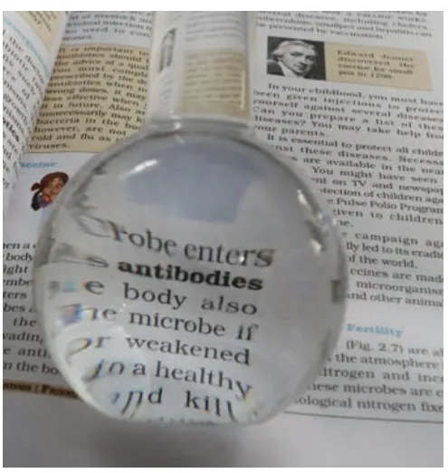
🧪 Activity 2.1: Let us observe
- Fill a round-bottom glass flask with water and close it with a cork.
- Place it on an open book and look at the letters through it.
- Observation: the letters look larger. The water-filled flask acts like a magnifying glass (a lens).
- Now look at an ant with a real magnifying glass: you can see the details of its body more clearly.
The microscope pioneers
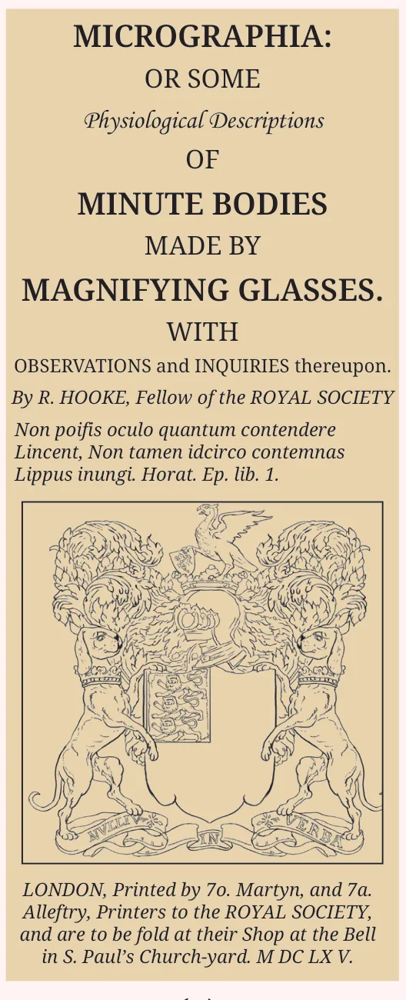
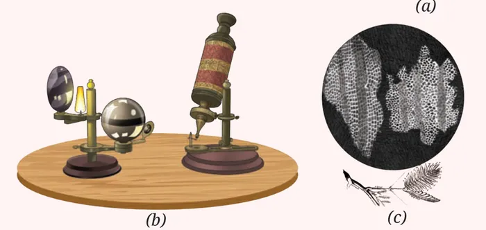
🔬 Robert Hooke (1665)
Published Micrographia with detailed drawings. His microscope magnified 200 to 300 times. In a thin slice of cork he saw many small empty spaces, like a honeycomb, and called each one a cell. This was the first use of the word "cell" in science.
🔭 Antonie van Leeuwenhoek (1660s)
A Dutch scientist who made better lenses and more useful microscopes. He was the first to clearly see and describe living bacteria and blood cells, so he is called the Father of Microbiology.
🧠 Memory trick
Hooke saw a Honeycomb in cork (dead cells, 1665). Leeuwenhoek saw Living things (bacteria, blood cells).
🔍 Live lab: Zoom Machine
Slide the magnification from your naked eye (1×) to an electron microscope (10,00,000×). Things become visible when they look bigger than about 0.1 mm.
What is a cell?
All living beings are made up of cells. Let us look at real cells using a microscope.
🧅 Activity 2.2: Let us study a cell (teacher demonstration): onion peel
- Wash an onion bulb and cut it vertically into pieces.
- With forceps, pull out the thin, transparent layer from the inner surface: the onion peel.
- Place the peel in a few drops of safranin (red stain) for 30 seconds: the cells turn pinkish and are easy to see.
- Rinse it in water with a thin brush to remove extra stain.
- Place it on a glass slide without folding or breaking it.
- Add a drop of glycerin: it stops the cells from drying and makes them clearer.
- Lower a coverslip slowly with a needle (at about 45°) so that no air bubbles get trapped.
- Wipe extra glycerin with blotting paper, then observe under a microscope (a foldable paper microscope is enough).
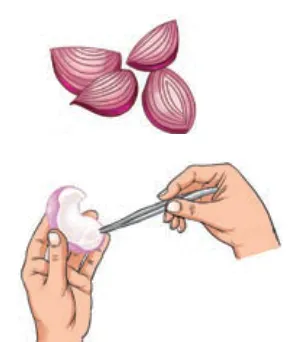
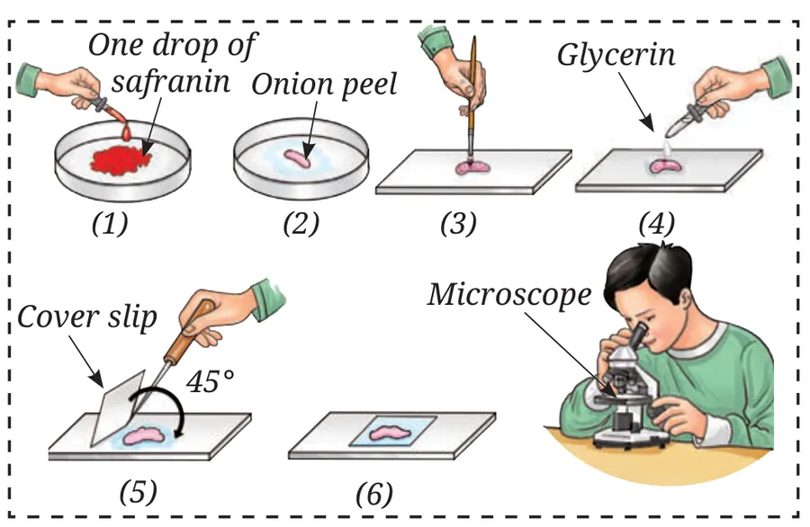
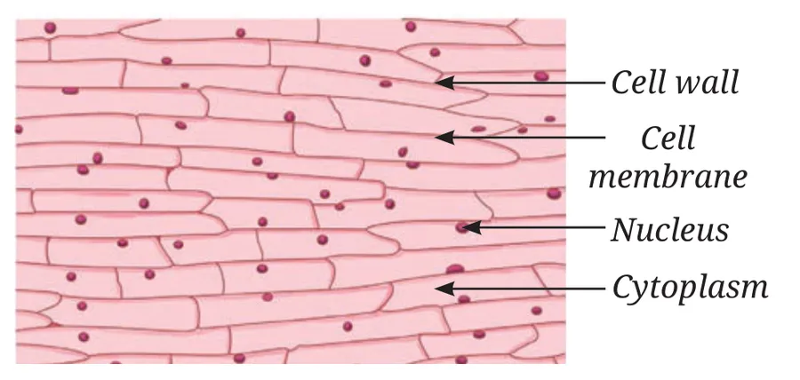
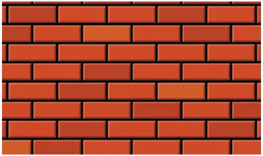
Observation: nearly rectangular cells, closely arranged without any space between them, just like bricks in a wall. That is the similarity between Fig. 2.3c and 2.3d: cells are the building blocks of a plant, as bricks are of a wall. Peels of other leaves show the same: all plants are made of cells.
👅 Activity 2.3: Let us investigate: human cheek cells
- Rinse your mouth with clean water.
- Gently scrape the inside of your cheek with the blunt end of a clean toothpick.
- Spread the material in a drop of water on a clean slide.
- Add a drop of methylene blue (blue stain): it increases contrast.
- After one minute, add a drop of glycerin to prevent drying.
- Place a coverslip, remove extra glycerin with blotting paper, observe and draw.
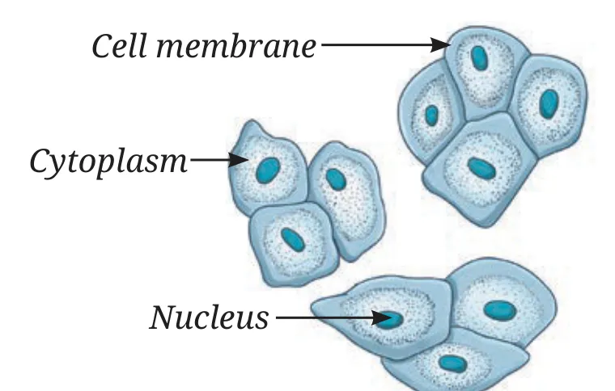
Observation: thin, flat, polygon-shaped cells that form the inner lining of the mouth.
| Onion peel cells (Activity 2.2) | Cheek cells (Activity 2.3) | |
|---|---|---|
| Stain | Safranin (red) | Methylene blue |
| Shape | Nearly rectangular, regular | Flat, polygon-shaped, irregular |
| Arrangement | Tightly packed, no gaps | Loosely arranged, separate or in small groups |
| Cell wall | Present (thick outer boundary) | Absent |
| Common to both | Cell membrane, cytoplasm and nucleus | |
🔬 Live lab: Virtual Microscope
Choose a slide. Add stain, then turn the focus knob until the picture is sharp. Switch on labels when it is clear.
Parts of a cell
Every cell you saw has three basic parts: cell membrane, cytoplasm and nucleus. Some cells have an extra outer layer, the cell wall.
| Part | Where / what | Function |
|---|---|---|
| Cell membrane | Thin outer layer of every cell; encloses cytoplasm and nucleus | Separates one cell from another. It is porous: lets in materials needed for life processes and lets waste out. |
| Cytoplasm | Jelly-like substance between the membrane and the nucleus | Contains other cell components and compounds (carbohydrates, proteins, fats, mineral salts). Most life processes take place here. |
| Nucleus | Round structure, usually in the middle; covered by a thin membrane | Regulates all activities of the cell and also growth. (The control centre.) |
| Cell wall | Extra outer layer outside the membrane in plant cells (also fungi, bacteria) | Gives rigidity and strength, so plant cells are compact and firm. |
🪜 A step further: more parts of a plant cell
- Plastids: tiny rod-shaped structures in plant cells. Chloroplasts are plastids with green chlorophyll for photosynthesis. In non-green parts, plastids store substances.
- Vacuole: a large, empty-looking space in plant cells. It stores important substances, gets rid of waste and keeps the cell's shape, giving strength and support. In animal cells vacuoles are usually absent or small.
- A cell is not a simple bag of liquid: it is a complex structure of many parts, each with its own job.
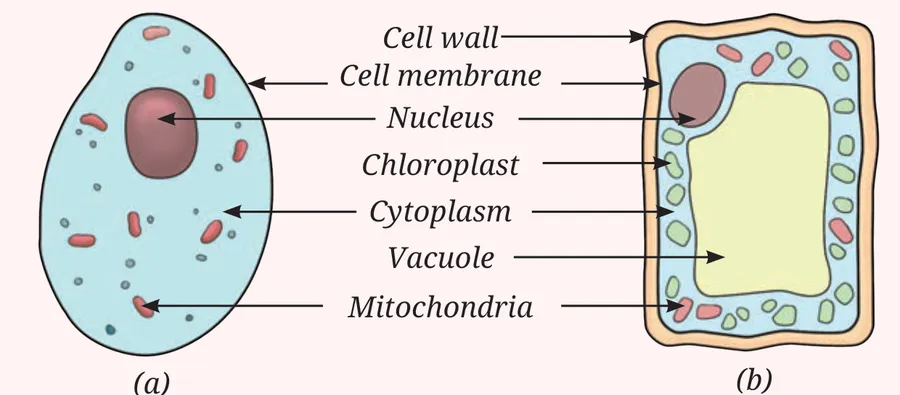
| Feature | Plant cell | Animal cell |
|---|---|---|
| Cell wall | Present | Absent |
| Shape | Fixed, usually rectangular | Irregular or round, flexible |
| Chloroplasts / plastids | Present (in green parts) | Absent |
| Vacuole | One large vacuole | Absent or small, many |
| Cell membrane, cytoplasm, nucleus, mitochondria | Present in both | |
🧫 Live lab: Cell Explorer
Pick a cell. Tap a part name to light it up and read what it does. Grey buttons are parts this cell does NOT have.
Variation in shape and structure of cells
Do all animal cells look the same? No! The unique shape, size and structure of each cell helps it do its specific function.
| Cell | Shape | How the shape helps |
|---|---|---|
| Muscle cell | Spindle-shaped (thick middle, pointed ends) | Thin, flexible: can contract and relax (in the food pipe they push food down in waves; in the stomach they churn food) |
| Nerve cell (neuron) | Very long with branches | Reaches different parts of the body and passes messages quickly |
| Cheek cell | Thin, flat | Forms a protective lining inside the cheek |
| Stomach lining cells | Varied | Make digestive juices and acid |
| Some plant cells | Long tubes | Carry water through the plant |
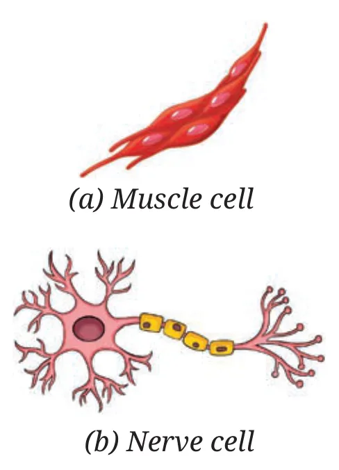
Plant cells also vary: rectangular, elongated, oval or tube-like. The number of cells also varies in different organisms. In the digestive system, all these different cells work together to make digestion possible.
Levels of organisation
The body of a living organism is organised in a complex way, just like a building made of bricks.
- Cell: the basic unit of life (like a brick is the basic unit of a wall).
- Tissue: a group of similar cells (e.g. muscle tissue).
- Organ: different tissues organised together (e.g. stomach).
- Organ system: several organs working together for a major function (e.g. digestive system).
- Organism: all the organ systems together (e.g. a human, a mango tree).
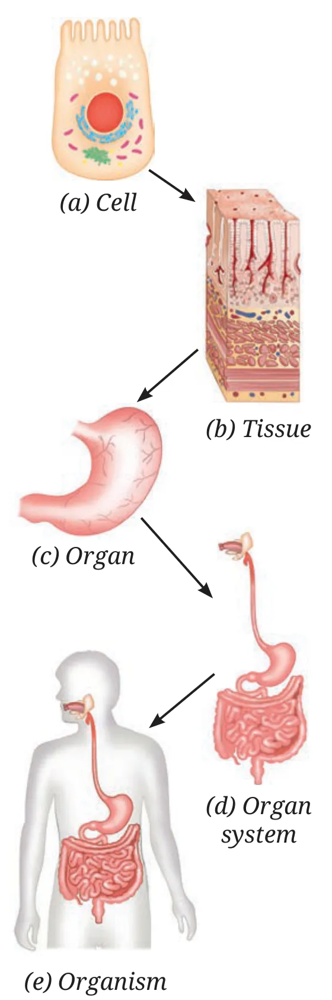
The life of a complex organism begins with a single cell, the egg. The egg divides again and again to form a complete living being made of many cells. Such living beings are called multicellular organisms: animals (including humans) and plants.
🥚 Ever heard of… the largest cell?
The yolk (yellow part) of an ostrich egg is a single cell, the largest known cell in the living world: about 130 mm to 170 mm in diameter! The egg also has non-cellular material: a shell for protection and a white liquid that nourishes the cell while it develops.
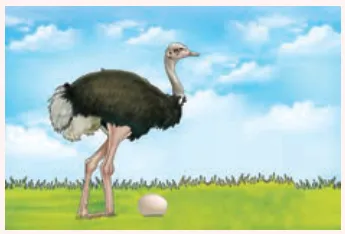
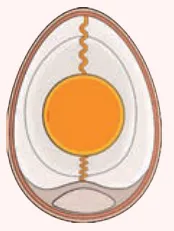
🪜 Live lab: Level Zoomer
Slide from a single cell up to a whole organism, for a human or a plant.
What are microorganisms?
Some living organisms are made of just one or very few cells and are too small to see with the naked eye. These are microorganisms or microbes (micro = very small; organism = living being).
Unicellular (one cell)
Bacteria, Amoeba, Paramecium, yeast. One cell does every job: eating, moving, getting rid of waste, reproducing.
Multicellular (many cells)
Some fungi (bread mould) and some algae. Plants and animals are always multicellular.
Microbes live in water, soil, air and even inside our body. To see them we need a microscope. Scientists have made a low-cost, foldable paper microscope: it shows less detail than a laboratory microscope but makes the microscopic world reachable for many people.
💧 Activity 2.4: Pond or stagnant water
Collect pond water (with an adult). Put a drop on a slide, add a coverslip and observe the tiny organisms.
🪴 Activity 2.5: Soil suspension
Put moist soil in a beaker (use a spoon or gloves, never bare hands). Add water and stir with a glass rod: the dirty-looking liquid with very fine soil particles is a soil suspension. Let it settle; take a drop from the top layer, cover and observe. You see small moving organisms like those in pond water.
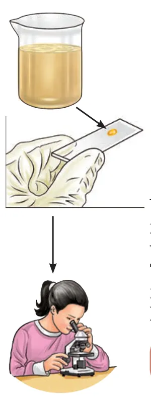
Activity 2.6: What did the students find?
Grade 8 students did Activities 2.4 and 2.5, used the library and internet, and identified protozoa, algae, fungi and bacteria.
| Table 2.1: Organisms present in pond water | ||
|---|---|---|
| Microorganism | Picture | Recorded data |
| Amoeba (Protozoa) | 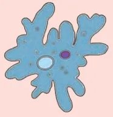 | Single cell, moving, irregular shape |
| Paramecium (Protozoa) | 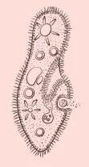 | Single cell, moves from place to place with the help of specialised structures (tiny hair-like cilia) |
| Algae | 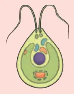 | Single cell, green because of a green pigment, moves with specialised structures |
| Table 2.2: Organisms present in soil suspension | ||
|---|---|---|
| Microorganism | Picture | Remarks |
| Bread mould (Fungi) | 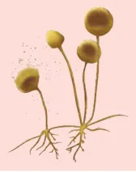 | Branched filament without chlorophyll, with sac-like structures |
| Mould (Fungi) | 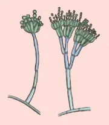 | Branched filament without chlorophyll, with brush-like structures |
| Algae | 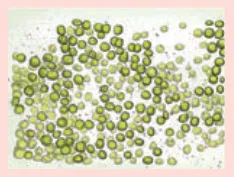 | Spherical, has chlorophyll (green pigment) |
| Bacteria | 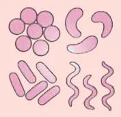 | Spherical, comma, spiral or rod-shaped; one long hair-like structure and many small hair-like projections |
A microscope that shows microbes magnifies them 100 to 400 times. Though tiny, microorganisms play an important role in our lives.
🦠 Ever heard of… viruses?
Viruses are microscopic and acellular (not made of cells). They multiply only when they enter a living cell. They may infect plants, animals or even bacteria and may cause disease. That is why they are different from other microorganisms.
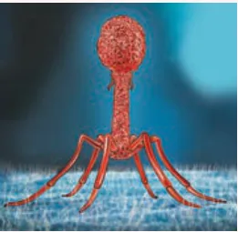
How are we connected to microbes?
Ever seen a lemon, tomato or orange rot when left out? The powdery or cotton-like growth on it shows it has been infected by microbes.
Where did they come from? Microorganisms are everywhere: in water, soil, air and on food. They are on leaves, stems and roots too. Like plants and animals, they show great diversity: some live in hot water springs, some in snow-cold zones, most at moderate temperatures. Many live in our gut, where bacteria help in digestion (Grade 7, Life Processes in Animals).
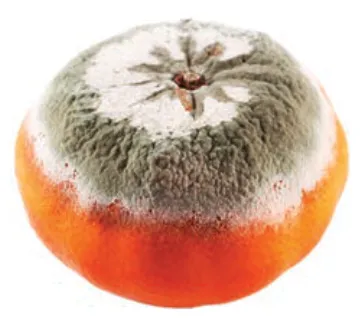
🥭 Why don't microbes spoil pickles and murabbas?
We add plenty of salt or sugar (and spices, oil) to them. These act as preservatives: a high concentration of salt or sugar does not allow microorganisms to grow.
Key players in cleaning the environment
🍂 Activity 2.7: Let us do
- Fill a container halfway with garden soil.
- Add fruit and vegetable peels; cover with a layer of soil.
- After 2–3 weeks, observe.
Observation: the peels have turned into a dark-coloured material: manure, rich in nutrients, which increases soil fertility.
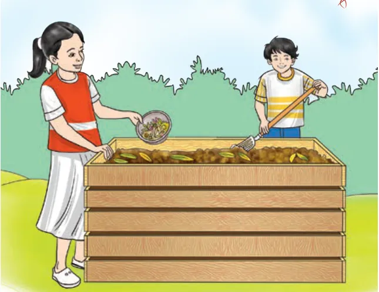
How? Microorganisms in soil, like fungi and bacteria, act on plant waste and slowly break it into simpler, nutrient-rich manure. That is why gardeners put dry leaves and plant waste into pits. Breaking down complex substances of dead plants and animals into simpler, nutrient-rich substances is called decomposition. The nutrients go back to the soil and help plants grow. Microbes also decompose dead animals and animal waste like dung. Manure forms best at an optimal temperature and the right moisture.
💡 So microbes…
…recycle waste, return nutrients to nature, help plant growth and clean our environment. Without them, dead leaves, dead animals and waste would pile up everywhere and nutrients would never return to the soil.
🍂 Live mini-lab: Compost pit
Set up the pit and move the weeks slider. Which conditions help microbes make manure fastest?
📜 Our scientific heritage
Ancient Indian texts, the Vedas, use the word 'Krimi' for tiny entities, both 'Drishya' (visible) and 'Adrishya' (invisible), and describe their good and harmful effects. The Atharvaveda also refers to Krimi.
🔥 A step further: microbes as a source of biogas
Many bacteria and fungi live where there is no oxygen. Some bacteria decompose plant and animal waste or household wastewater there and release biogas: a mixture mostly of methane (a high proportion) and carbon dioxide. Biogas is used for cooking, heating, generating electricity and even running vehicles.
👨🔬 Be a scientist: Ananda Mohan Chakrabarty (1938–2020)
Studied bacteria. In 1971 he developed a special bacterium that could break down oil spills. His discovery got a patent in 1980. A patent is a right given to an inventor so that no one else can copy, use or sell the invention without permission. His work showed how microbes can solve problems like pollution.
Microorganisms and food
🍞 Activity 2.8: Let us perform (yeast)
- Take bowls A and B, each with 200 g flour (atta or maida) and a pinch of sugar.
- Add a little yeast powder to bowl A only. Bowl B has no yeast (for comparison: a control).
- Knead both with warm water into soft dough; cover with a damp cloth; keep in a warm place.
- Observe after 4–5 hours.
Observation: dough A has risen, is fluffy and smells different. Dough B has not changed.
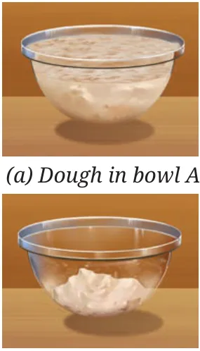
| Question | Answer |
|---|---|
| What is yeast? | A microorganism, a unicellular fungus. It grows well in warm conditions. |
| Why does the dough rise? | Yeast respires and breaks down food (sugar) for energy, releasing carbon dioxide. CO₂ forms bubbles that make the dough soft and fluffy. |
| Why the different smell? | Yeast also makes a small amount of alcohol. |
| Why sugar? | Food for yeast: it gets energy from it quickly. |
| Why warm water and a warm place? | Yeast grows and works best when warm (very hot water would kill it; cold slows it). |
| Uses | Breads, cakes, pastries. Bacteria like Lactobacillus help ferment batter for idli, dosa and dough for bhatura. |
🎈 Live lab: Yeast Balloon Lab (Activity 2.8, Q2 and Q9)
Two test tubes of sugar solution, each with a balloon. Choose what goes into tube B and where you keep it, then move the clock.
🥛 Activity 2.9: Let us prepare (curd)
- Pour lukewarm milk in bowl A and cold milk in bowl B.
- Add a small spoonful of curd to each and mix.
- Cover. Keep A in a warm place, B in a cool place (refrigerator) for a few hours or overnight.
- Write predictions and observations in Table 2.4.
| Table 2.4: Testing for curd formation (model observations) | |||||
|---|---|---|---|---|---|
| Appearance A | Appearance B | Colour A | Colour B | Possible reason | |
| Prediction | Will set | Will stay liquid | White | White | Lactobacillus grows in warmth |
| Observation | Thick curd, a little sour | Still milk, maybe a little sour | Creamy white | White | Bacteria multiplied in warm A, very slowly in cold B |
Curd contains several kinds of bacteria; one is Lactobacillus. It feeds on the milk sugar (lactose), multiplies and ferments the milk into curd. Instead of alcohol (like yeast) it makes lactic acid, which makes curd sour. It grows well when warm, so curd forms in bowl A, not B.
🥛 Live lab: Curd Lab
Set the milk temperature and how much curd starter you add, then move the clock. Watch the bacteria multiply and the milk set.
Rhizobium: bacteria that feed plants
Some bacteria, like Rhizobium, live in swollen regions called nodules on the roots of legumes (beans, peas, lentils, cowpea). They trap nitrogen from the air and make it useful for the plants, so the plants grow well without chemical fertilisers.
That is why farmers grow legumes in rotation with other crops (crop rotation): it naturally increases nitrogen in the soil and keeps it healthy for the next crop.
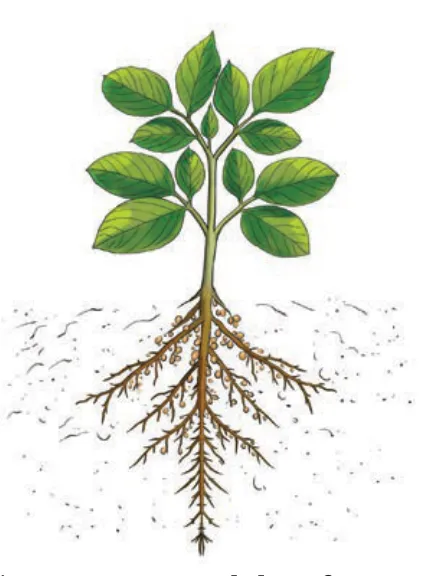
🌾 Live mini-lab: Nitrogen farm
Plan four seasons for one field. Watch the soil nitrogen and the wheat harvest. Can you get a good harvest without buying fertiliser?
🍞 Live lab: Microbe Growth Chamber (Q6 and Q7)
Put a food in a place and move the days slider. Mould needs warmth, moisture and air. Which food stays safe longest?
Amazing microalgae: tiny helpers in water
Microalgae are microscopic, plant-like organisms that live in water, soil, air and even on trees. They make their own food using sunlight.
🌬️ Oxygen
They release oxygen and produce more than half of the Earth's oxygen.
🐟 Food
Rich in nutrients; food for many aquatic animals. Spirulina, Chlorella and diatoms are used as health supplements and medicines.
💧 Clean-up and fuel
Help clean water and are used to make biofuel.
Pollution, climate change and habitat destruction threaten microalgae. We must conserve them to protect the environment and keep Earth's oxygen balance.
🥗 Ever heard of… Spirulina, the superfood?
Spirulina is a microalga rich in protein (more than 60% of its body weight), a good source of vitamin B12, with little fat and sugar. Spirulina farming is a growing livelihood:
- Clear glass tank in a bright place, away from direct sunlight.
- Cover with a shade net or keep at moderate temperature.
- Fill with pond water.
- Add living Spirulina from a pond.
- Stir twice a week.
- After 3–6 weeks, harvest by filtering through a fine cloth.
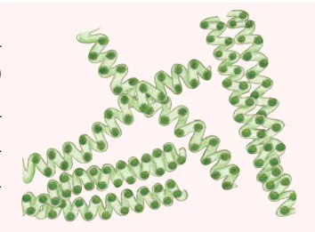
Why is the cell the basic unit of life?
The bodies of all living organisms are made of tiny building blocks called cells, and a single cell has parts that let it carry out life's functions.
Multicellular (many-celled)
All plants and animals. Cells do specialised jobs but also cooperate, which increases the chance of survival.
Unicellular (single-celled)
Bacteria and protozoa: one cell does all the functions needed to survive. Algae and fungi can be either: yeast is a unicellular fungus; mould is multicellular.
- Microbe cells also have a cell membrane.
- Fungi have a cell wall but no chloroplasts, so they cannot make their own food by photosynthesis.
- Bacteria have no well-defined nucleus and no nuclear membrane. Instead their genetic material lies in a region called the nucleoid. This is what makes bacterial cells different from the cells of yeast, protozoa, algae, fungi, plants and animals.
- To see even smaller parts inside cells, we use an electron microscope, which magnifies about 10,00,000 times.
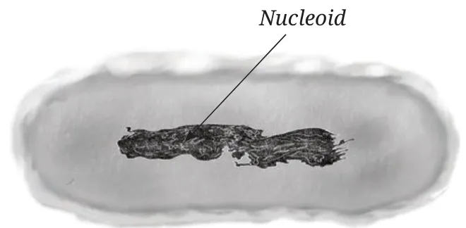
| Part | Animal cell | Plant cell | Fungal cell (yeast) | Bacterial cell |
|---|---|---|---|---|
| Cell membrane | ✔ | ✔ | ✔ | ✔ |
| Cytoplasm | ✔ | ✔ | ✔ | ✔ |
| Cell wall | ✘ | ✔ | ✔ | ✔ |
| Well-defined nucleus | ✔ | ✔ | ✔ | ✘ (nucleoid) |
| Chloroplast | ✘ | ✔ | ✘ | ✘ |
| Large vacuole | ✘ (small or none) | ✔ | may have | ✘ |
Some microbes cause diseases in plants, animals and humans. You will study them in the next chapter (Health: The Ultimate Treasure).
Mind map, snapshots and traps
📸 Snapshots (chapter summary)
- Microorganisms are small organisms not visible to the unaided eye. They live in all kinds of environments, even inside plants and animals.
- They are unicellular or multicellular. Bacteria and protozoa are unicellular; fungi can be either; plants and animals are multicellular.
- The cell is the basic unit of life. All living organisms are made of cells.
- A typical cell has a cell membrane, cytoplasm and a nucleus. Plant, fungal and bacterial cells also have a cell wall. Bacteria lack a well-defined nucleus.
- Cells differ in shape and size; shape is related to function.
- Viruses are different: they reproduce only inside a host organism.
- Microorganisms can be beneficial or harmful. Some decompose waste and clean the environment; some live in root nodules of legumes and trap nitrogen.
- Yeast (a fungus) is used for bread, cakes, pastries, idli, dosa and bhatura. Lactobacillus forms curd and is used in food fermentation.
🚫 Common mistakes
"Hooke discovered bacteria." Wrong
Hooke saw (dead) cork cells and named the cell. Leeuwenhoek first saw living bacteria and blood cells.
"Animal cells have a cell wall." Wrong
Only plant, fungal and bacterial cells have a cell wall. Animal cells have only a cell membrane.
"Cell wall and cell membrane are the same." Wrong
The membrane is thin and porous (controls entry and exit). The wall is an extra, rigid layer outside it (strength).
"Yeast is a bacterium." Wrong
Yeast is a fungus. Lactobacillus and Rhizobium are bacteria.
"Yeast makes oxygen, so dough rises." Wrong
Yeast releases carbon dioxide (it turns lime water milky). It also makes a little alcohol.
"Curd is sour because of alcohol." Wrong
Lactobacillus makes lactic acid. Yeast makes alcohol.
"Bacteria have no genetic material because they have no nucleus." Trap
They have it in the nucleoid region, without a nuclear membrane.
"Viruses are the smallest cells." Wrong
Viruses are acellular (not cells) and multiply only inside living cells.
"Tissue → cell → organ…" Trap
The order is cell → tissue → organ → organ system → organism.
"All microbes are harmful." Wrong
Most of this chapter is about helpful microbes: manure, biogas, curd, bread, nitrogen, oxygen.
Microbe Arcade: 8 games
Play to learn. Every game gives you ⭐ stars, saved on this phone. Collect all 40 to become a Microbe Master.
🔬 Game 1: Name that microbe
Look through the microscope and name it. 8 rounds.
🧩 Game 2: Which cell part am I?
Read the clue and name the part. 10 rounds.
🟢 Game 3: Venn sorter (NCERT Q1)
Animal cell, plant cell, bacterial cell: where does each part belong? 8 rounds.
🔢 Game 4: Put in order
Tap the steps in the right order. A wrong tap costs a life. 4 rounds.
✅ Game 5: Helpful or harmful?
Is this microbe action helpful or harmful to us? 10 rounds.
🃏 Game 6: Memory match
Flip two cards. Match each microbe or part with its job. Fewer moves, more stars.
⏱️ Game 7: Speed round
True or false? As many as you can in 60 seconds. A wrong answer costs 3 seconds.
🕵️ Game 8: Lab detective
Read the observation and find the best explanation. 8 cases.
Exam pattern and answer-writing
📝 How Class 8 Science is tested
- There is no board exam in Class 8, so there are no CBSE board previous-year questions for this chapter. Your school's periodic tests, half-yearly and annual papers are set by the school.
- Most CBSE schools now use the same section pattern as the Class 9 and 10 board papers. The question bank below follows it: A MCQ and Assertion-Reason (1 mark), B very short answer (2 marks), C short answer (3 marks), D long answer (5 marks), E case-based (4 marks: 1 + 1 + 2).
- This chapter is diagram-heavy and activity-heavy: expect labelled diagrams (plant cell, animal cell, cheek cells, onion peel), slide-preparation steps, and experiments (yeast + lime water, curd, compost, root nodules).
Diagram (2 or 3 marks)
Neat outline (1) + at least 4 correct labels with arrows (1–2). Pencil, label lines straight, no shading.
Difference (3 marks)
Table with 3 points, same basis on both sides (cell wall, vacuole, plastids).
Activity (5 marks)
Aim + materials + steps + diagram + observation + conclusion. Name the stain and say why glycerin is used.
✍️ Marks-winning habits
- Write the full chain: cell → tissue → organ → organ system → organism, with one example each.
- Always name the gas (carbon dioxide) and the test (lime water turns milky) in yeast questions.
- Name the microbe correctly and in italics if you can: Lactobacillus, Rhizobium, yeast (fungus).
- For "why" questions on temperature: microbes grow best in warm, moist conditions with air (most of them).
- Stains: safranin for onion peel, methylene blue for cheek cells; glycerin prevents drying.
Marks shown in green boxes in the question bank are a guide to how a CBSE-style school paper would split the marks, written by MT Classes (not from an official paper).
Question bank with answers
Every kind of question this chapter can be asked in a CBSE-style school exam. Tap a question to see the model answer. Green boxes show how marks are usually split.
Class 8 has no board exam, so there are no board previous-year questions (PYQs) for this chapter. These 100 questions are written by MT Classes in the CBSE pattern.
Section A: Multiple choice questions (1 mark each)
1.The word "lens" comes from the shape of a (a) lemon (b) lentil seed (c) leaf (d) lamp
(b) lentil seed: thick in the middle and thin at the edge.
2.Who first used the word "cell" after observing cork? (a) Leeuwenhoek (b) Robert Hooke (c) A. M. Chakrabarty (d) Newton
(b) Robert Hooke, in his book Micrographia (1665).
3.Robert Hooke's microscope magnified objects about (a) 2–3 times (b) 20–30 times (c) 200–300 times (d) 10,00,000 times
(c) 200–300 times.
4.Who is known as the Father of Microbiology? (a) Robert Hooke (b) Antonie van Leeuwenhoek (c) Louis Pasteur (d) Ananda Mohan Chakrabarty
(b) Antonie van Leeuwenhoek, the first to clearly see and describe living bacteria and blood cells.
5.A round-bottom flask filled with water makes letters look bigger because it acts as a (a) mirror (b) prism (c) magnifying glass (d) filter
(c) magnifying glass (a lens).
6.The stain used for onion peel in Activity 2.2 is (a) iodine (b) methylene blue (c) safranin (d) lime water
(c) safranin (red stain).
7.Glycerin is put on the slide to (a) colour the cells (b) prevent the cells from drying (c) kill the cells (d) make cells divide
(b) prevent drying and improve clarity.
8.The coverslip is lowered slowly with a needle so that (a) the cells move (b) no air bubbles are trapped (c) stain spreads (d) glycerin dries
(b) no air bubbles get trapped.
9.Cheek cells are stained with (a) safranin (b) methylene blue (c) glycerin (d) iodine
(b) methylene blue.
10.Which part is present in onion peel cells but absent in cheek cells? (a) Nucleus (b) Cytoplasm (c) Cell membrane (d) Cell wall
(d) Cell wall.
11.The part of the cell that regulates all its activities is the (a) cytoplasm (b) nucleus (c) vacuole (d) cell wall
(b) nucleus. It also regulates growth.
12.Most life processes of a cell take place in the (a) nucleus (b) cell wall (c) cytoplasm (d) vacuole
(c) cytoplasm.
13.Chloroplasts are a type of (a) vacuole (b) plastid (c) nucleus (d) cell wall
(b) plastid containing chlorophyll.
14.A muscle cell is (a) spindle-shaped (b) long and branched (c) flat and polygonal (d) rectangular
(a) spindle-shaped.
15.The correct order of levels of organisation is (a) cell → organ → tissue → organism (b) cell → tissue → organ → organ system → organism (c) tissue → cell → organ → organism (d) organ → tissue → cell → organism
(b) cell → tissue → organ → organ system → organism.
16.A group of similar cells is called a (a) organ (b) tissue (c) organ system (d) organism
(b) tissue.
17.The largest known single cell is the (a) nerve cell (b) yolk of an ostrich egg (c) onion cell (d) muscle cell
(b) the yolk of an ostrich egg (about 130–170 mm).
18.Which is unicellular? (a) Bread mould (b) Amoeba (c) Mango tree (d) Human
(b) Amoeba.
19.Yeast is a (a) bacterium (b) protozoan (c) fungus (d) virus
(c) fungus (unicellular).
20.The gas released by yeast that makes dough rise is (a) oxygen (b) nitrogen (c) carbon dioxide (d) methane
(c) carbon dioxide.
21.The bacterium that helps in curd formation is (a) Rhizobium (b) Lactobacillus (c) Amoeba (d) Spirulina
(b) Lactobacillus, which makes lactic acid.
22.Root nodules of legumes contain (a) yeast (b) Rhizobium (c) Lactobacillus (d) viruses
(b) Rhizobium, which traps nitrogen from the air.
23.Biogas mainly contains (a) oxygen and nitrogen (b) methane and carbon dioxide (c) hydrogen and helium (d) only oxygen
(b) methane and carbon dioxide.
24.The genetic material of bacteria is found in the (a) nucleus (b) nucleoid (c) vacuole (d) chloroplast
(b) nucleoid; bacteria have no well-defined nucleus.
25.Microalgae produce (a) less than 1% of Earth's oxygen (b) more than half of Earth's oxygen (c) no oxygen (d) only carbon dioxide
(b) more than half of Earth's oxygen supply.
26.An electron microscope magnifies about (a) 10 times (b) 400 times (c) 10,00,000 times (d) 300 times
(c) 10,00,000 times.
27.Assertion (A): Animal cells do not have a cell wall. Reason (R): The cell wall gives rigidity and strength to plant cells. (a) Both true, R explains A (b) Both true, R does not explain A (c) A true, R false (d) A false, R true
(b) Both are true, but R (what a cell wall does) does not explain why animal cells lack it.
28.Assertion (A): Dough with yeast rises in a warm place. Reason (R): Yeast respires and releases carbon dioxide, which forms bubbles. (a) Both true, R explains A (b) Both true, R does not explain A (c) A true, R false (d) A false, R true
(a) Both true; R explains A.
29.Assertion (A): Pickles do not get spoiled easily. Reason (R): A high concentration of salt does not allow microorganisms to grow. (a) Both true, R explains A (b) Both true, R does not explain A (c) A true, R false (d) A false, R true
(a) Both true; R explains A.
30.Assertion (A): Viruses are microorganisms made of a single cell. Reason (R): Viruses multiply only inside living cells. (a) Both true, R explains A (b) Both true, R does not explain A (c) A true, R false (d) A false, R true
(d) A is false: viruses are acellular. R is true.
31.Assertion (A): Farmers grow legumes in rotation with other crops. Reason (R): Rhizobium in legume root nodules increases nitrogen in the soil. (a) Both true, R explains A (b) Both true, R does not explain A (c) A true, R false (d) A false, R true
(a) Both true; R explains A.
32.Assertion (A): Fungi can make their own food. Reason (R): Fungal cells have a cell wall. (a) Both true, R explains A (b) Both true, R does not explain A (c) A true, R false (d) A false, R true
(d) A is false: fungi have no chloroplasts, so they cannot photosynthesise. R is true.
33.Assertion (A): Nerve cells are long and branched. Reason (R): Their shape helps them reach different parts of the body and pass messages quickly. (a) Both true, R explains A (b) Both true, R does not explain A (c) A true, R false (d) A false, R true
(a) Both true; R explains A.
34.Assertion (A): Curd forms faster in a refrigerator. Reason (R): Lactobacillus grows well in warm conditions. (a) Both true, R explains A (b) Both true, R does not explain A (c) A true, R false (d) A false, R true
(d) A is false (curd forms faster in a warm place); R is true.
Section B: Very short answer questions (2 marks each)
35.Why is a lens called a "lens"? What does it do?
Its shape is like a lentil seed: thick in the middle and thin at the edge 1. It makes small things look bigger (magnifies) 1.
36.What did Robert Hooke observe in cork? Why is it important?
He saw many small empty spaces like a honeycomb and called each one a cell 1. It was the first time the word "cell" was used in science for the basic unit of life 1.
37.Why is Leeuwenhoek called the Father of Microbiology?
He made better lenses and more useful microscopes 1. He was the first to clearly see and describe tiny living things like bacteria and blood cells 1.
38.Why do we use stain and glycerin while preparing a slide?
Stain (safranin or methylene blue) gives colour and increases contrast so cell parts are clearly seen 1. Glycerin prevents the cells from drying and improves clarity 1.
39.Name the three basic parts of a cell.
Cell membrane ½, cytoplasm ½ and nucleus ½; plant cells also have a cell wall ½.
40.Write two functions of the cell membrane.
It encloses the cytoplasm and nucleus and separates one cell from another 1. Being porous, it allows entry of materials needed for life processes and exit of waste 1.
41.What is the function of (a) the nucleus and (b) the cell wall?
(a) The nucleus regulates all activities of the cell and also growth 1. (b) The cell wall gives rigidity and strength to plant cells 1.
42.What are plastids? Give the function of chloroplasts.
Plastids are tiny rod-shaped structures in plant cells; in non-green parts they store substances 1. Chloroplasts contain chlorophyll and help in photosynthesis 1.
43.Give two functions of the vacuole in a plant cell.
Stores important substances and gets rid of waste 1. Maintains the shape of the cell, giving strength and support 1.
44.How is the shape of a nerve cell related to its function?
A nerve cell is very long and branched 1. This helps it reach different parts of the body and pass on messages quickly 1.
45.Define tissue and organ with one example each.
Tissue: a group of similar cells, e.g. muscle tissue 1. Organ: different tissues organised together, e.g. stomach 1.
46.What are multicellular organisms? Give two examples.
Organisms made up of many cells, formed by repeated division of a single egg cell 1. Examples: humans, mango tree (any animals or plants) 1.
47.What are microorganisms? Name two places where they are found.
Living beings made of one or a few cells, too small to see with the naked eye 1. Found in water, soil, air, food and inside our body (any two) 1.
48.What is a soil suspension? Why should we not touch the soil with bare hands?
Soil stirred in water: a dirty-looking liquid with very fine soil particles 1. Soil contains many microbes, some of which may be harmful, so we use a spoon or gloves 1.
49.How are viruses different from other microorganisms?
Viruses are acellular (not made of cells) 1. They multiply only inside a living host cell and may cause disease 1.
50.Why don't pickles and murabbas get spoiled easily?
Salt or sugar (and spices) are added in high concentration 1. These act as preservatives; microbes cannot grow in such high salt or sugar 1.
51.What is decomposition? Which microbes carry it out?
Breaking down complex substances of dead plants and animals into simpler, nutrient-rich substances 1. Carried out by microorganisms like bacteria and fungi 1.
52.What is biogas? Give two uses.
A mixture of gases, mainly methane with carbon dioxide, released when bacteria decompose waste without oxygen 1. Uses: cooking, heating, generating electricity, running vehicles (any two) 1.
53.Why is curd sour?
Lactobacillus feeds on lactose (milk sugar) and ferments it 1. It produces lactic acid, which makes curd sour 1.
54.Why do farmers not need to add much nitrogen fertiliser to bean or pea crops?
Legumes have root nodules containing Rhizobium bacteria 1. These trap nitrogen from the air and make it available to the plants 1.
55.Give two reasons why microalgae are important.
They release oxygen: more than half of Earth's oxygen 1. They are food for aquatic animals; some (Spirulina, Chlorella) are health supplements; they clean water and make biofuel (any one) 1.
56.What is a nucleoid? In which organisms is it found?
A region containing the genetic material that is not enclosed by a nuclear membrane 1. Found in bacteria 1.
57.Distinguish between unicellular and multicellular organisms with one example each.
Unicellular: one cell does all functions, e.g. bacteria, Amoeba, yeast 1. Multicellular: many cells with specialised functions, e.g. plants, animals, bread mould 1.
58.What is a patent? Who received a patent for an oil-eating bacterium?
A right given to an inventor so that no one else can copy, use or sell the invention without permission 1. Ananda Mohan Chakrabarty (bacterium developed 1971, patent 1980) 1.
59.Why is an ostrich egg yolk called a single cell even though it is so large?
The yolk is one cell, the largest known in the living world (130–170 mm) 1. The shell and the white liquid are non-cellular material for protection and nourishment 1.
60.What is a unicellular organism? Give two examples.
An organism whose whole body is made of a single cell, which does all life activities 1. Examples: Amoeba, Paramecium, Chlamydomonas, bacteria, yeast (any two) 1.
61.Why are viruses said to be on the border of living and non-living?
Outside a host cell they show no signs of life and can even be stored like crystals 1. Inside a living host cell they multiply, like living things 1.
62.Why do we add iodine or methylene blue stain while observing cells?
Cells are almost transparent, so their parts are hard to see 1. A stain colours parts like the nucleus, so they stand out clearly under the microscope 1.
63.State two uses of Spirulina.
It is a protein- and vitamin-rich food supplement (food security) 1. It can be grown in tanks by people as a livelihood and is used in animal and fish feed 1.
64.Why does dough kept in a cold place rise very slowly?
Yeast grows and respires slowly in the cold 1. So it makes very little carbon dioxide and the dough does not become fluffy quickly 1.
Section C: Short answer questions (3 marks each)
65.Describe Activity 2.1 with a water-filled flask. What does it show?
Fill a round-bottom glass flask with water and close it with a cork 1. Place it on an open book and look at the letters through it: they look larger 1. It shows that a curved, transparent, water-filled glass acts like a lens/magnifying glass 1.
66.Compare onion peel cells and human cheek cells (any three points).
Shape: onion cells are nearly rectangular; cheek cells are flat and polygon-shaped 1. Cell wall: present in onion cells, absent in cheek cells 1. Arrangement and stain: onion cells are tightly packed (safranin); cheek cells are loosely arranged (methylene blue). Both have a cell membrane, cytoplasm and nucleus 1.
67.Differentiate between a plant cell and an animal cell (three points).
Cell wall: present in plant cells, absent in animal cells 1. Plastids/chloroplasts: present in plant cells, absent in animal cells 1. Vacuole: one large vacuole in plant cells; small or absent in animal cells 1.
68.Give the functions of cell membrane, cytoplasm and nucleus.
Cell membrane: encloses the cell contents, separates cells and, being porous, controls entry of useful materials and exit of waste 1. Cytoplasm: contains components and compounds (carbohydrates, proteins, fats, salts); most life processes occur here 1. Nucleus: regulates all activities of the cell and growth 1.
69.How do muscle cells help in digestion?
Muscle cells in the food pipe are thin, flexible and spindle-shaped 1. They contract and relax in a wave-like manner, pushing food down to the stomach 1. Muscle cells in the stomach wall churn the food, while lining cells make digestive juices and acid 1.
70.Explain the levels of organisation with an example from the human body.
Cell (muscle cell) → tissue (muscle tissue: group of similar cells) 1. Organ (stomach: different tissues together) → organ system (digestive system: several organs for a major function) 1. Organism (human: all organ systems together) 1.
71.Describe how you would observe microorganisms in pond water.
Collect pond or stagnant water in a container with an adult's help 1. Put a drop on a slide with a dropper and place a coverslip 1. Observe under a microscope: you see tiny organisms like Amoeba, Paramecium and algae 1.
72.Give the observations recorded for Amoeba, Paramecium and algae in pond water (Table 2.1).
Amoeba (protozoa): single cell, moving, irregular shape 1. Paramecium (protozoa): single cell, moves from place to place using specialised structures 1. Algae: single cell, green due to a green pigment, moves using specialised structures 1.
73.Describe the four microorganisms seen in soil suspension (Table 2.2).
Bread mould (fungus): branched filament without chlorophyll with sac-like structures 1. Mould (fungus): branched filament with brush-like structures; algae: spherical with chlorophyll 1. Bacteria: spherical, comma, spiral or rod-shaped, with a long hair-like structure and many small projections 1.
74.Why do fruits like oranges and tomatoes rot when left outside? Where do the microbes come from?
The powdery or cotton-like growth shows they are infected by microbes (moulds and bacteria) 1. Microbes are present everywhere: in air, water, soil and on food items 1. They land on the fruit and grow when it is warm and moist, breaking it down 1.
75.How do microorganisms help in cleaning the environment?
They decompose dead plants, fallen leaves, dead animals and animal waste such as dung 1. They break complex substances into simpler, nutrient-rich ones (manure) that return to the soil 1. So waste does not pile up and nutrients are recycled, helping plants grow 1.
76.Describe Activity 2.7 and its result.
Fill a container halfway with garden soil, add fruit and vegetable peels and cover with soil 1. After 2–3 weeks the peels turn into a dark-coloured material called manure 1. Bacteria and fungi in the soil decomposed the peels into nutrient-rich manure that increases soil fertility 1.
77.Why do we add sugar and warm water while making dough with yeast?
Sugar is food for yeast; it breaks it down for energy 1. Yeast grows well in warm conditions, so warm water helps it become active 1. More activity means more carbon dioxide, so the dough rises and becomes fluffy 1.
78.Compare the role of yeast and Lactobacillus in food.
Yeast is a fungus; Lactobacillus is a bacterium 1. Yeast breaks down sugar and releases carbon dioxide and a little alcohol (bread, cakes) 1. Lactobacillus breaks down lactose and makes lactic acid (curd, idli/dosa batter, bhatura dough) 1.
79.Explain how Rhizobium benefits farmers.
Rhizobium lives in nodules on the roots of legumes (beans, peas, lentils) 1. It traps nitrogen from the air and makes it useful for plants, so less chemical fertiliser is needed 1. Growing legumes in rotation naturally increases soil nitrogen for the next crop 1.
80.What is Spirulina? Why is it called a superfood?
Spirulina is a microalga (spiral-shaped) 1. It is rich in protein (more than 60% of its body weight) and a good source of vitamin B12 1. It has little fat and sugar and is used as a health supplement; farming it is a livelihood 1.
81.How are fungal cells and bacterial cells different from plant and animal cells?
Fungal cells have a cell wall but no chloroplasts, so they cannot make their own food 1. Bacterial cells have a cell wall but no well-defined nucleus or nuclear membrane; they have a nucleoid 1. Plant cells have a wall and chloroplasts; animal cells have no wall; both have a nucleus 1.
82.Why is the cell considered the basic unit of life?
The bodies of all living organisms are made of cells 1. A single cell has components that perform all life functions; unicellular organisms live as one cell 1. In multicellular organisms cells do specialised jobs and cooperate, so all life is built from and run by cells 1.
83.What would happen if microorganisms did not exist on Earth?
Dead plants, animals and waste would not decompose and would pile up everywhere 1. Nutrients would not return to the soil, so plants would not grow well; there would be no natural manure or nitrogen fixation 1. We would lose curd, bread, biogas, and much of Earth's oxygen from microalgae 1.
84.State the contribution of Ananda Mohan Chakrabarty.
He was a scientist (1938–2020) who studied bacteria 1. In 1971 he developed a special bacterium that could break down oil spills, cleaning the environment 1. His discovery received a patent in 1980; it showed microbes can solve pollution problems 1.
85.What is "Krimi"? How does it show that ancient Indians thought about microbes?
The Vedas, including the Atharvaveda, use the word "Krimi" for different tiny living entities 1. They describe both "Drishya" (visible) and "Adrishya" (invisible) Krimi 1. Vedic texts mention their beneficial and harmful effects, which shows ancient Indians thought about invisible life long before microscopes 1.
86.Give three ways in which microorganisms help in keeping our environment clean.
Bacteria and fungi decompose dead plants, animals and kitchen waste into manure 1. Bacteria in sewage treatment plants and biogas plants break down wastewater and dung 1. Special bacteria, like the one made by Ananda Mohan Chakrabarty, can break down oil spills 1.
87.Compare the work of Robert Hooke and Antonie van Leeuwenhoek (three points).
Hooke (1665) used a compound microscope and saw dead cork cells, naming them "cells" 1. Leeuwenhoek made powerful single-lens microscopes and was the first to see living microbes ("animalcules") in pond water and teeth scrapings 1. Hooke described cells in his book Micrographia; Leeuwenhoek is called the Father of Microbiology 1.
88.What is mould? Where does it grow and how do its spores spread?
Mould is a fungus made of fine threads (hyphae) with tiny round spore heads, seen as fuzzy white, green or black growth 1. It grows on moist, warm food like bread, fruit and chapati 1. Its very light spores float in the air and settle on food, where they grow if conditions suit them 1.
Section D: Long answer questions (5 marks each)
89.Describe the steps to prepare a temporary slide of onion peel and observe it. Draw a labelled diagram of what you see.
Wash an onion, cut it, and pull out the thin transparent peel from the inner surface with forceps 1. Stain it with a few drops of safranin for 30 seconds; rinse in water with a brush to remove extra stain 1. Place it on a slide without folding, add a drop of glycerin to prevent drying, and lower a coverslip slowly with a needle to avoid air bubbles; wipe extra glycerin with blotting paper 1. Observe under a microscope: nearly rectangular cells tightly packed without spaces, like bricks in a wall 1. Diagram: rectangular cells labelled cell wall, cell membrane, cytoplasm, nucleus 1.
90.Draw a labelled diagram of a plant cell and an animal cell. Write three differences between them.
Animal cell diagram labelled cell membrane, cytoplasm, nucleus, mitochondria, small vacuole 1. Plant cell diagram labelled cell wall, cell membrane, cytoplasm, nucleus, chloroplast, large vacuole 1. Differences: plant cells have a cell wall, animal cells do not 1; plant cells have chloroplasts/plastids, animal cells do not 1; plant cells have a large vacuole, animal cells have small or no vacuoles (also fixed vs irregular shape) 1.
91."The shape of a cell is related to its function." Justify with four examples.
Muscle cells are spindle-shaped, thin and flexible: they contract and relax, e.g. pushing food down the food pipe and churning food in the stomach 1½. Nerve cells are long and branched: they reach different parts of the body and pass messages quickly 1. Cheek cells are thin and flat: they form a protective lining inside the cheek 1. Some plant cells form long tubes that carry water through the plant; plant cells with cell walls are compact and firm for support 1½.
92.Describe Activity 2.8 (yeast and dough). What are your observations and the reasons for them?
Take two bowls A and B with 200 g flour and a pinch of sugar each; add yeast only to A (B is the comparison) 1. Knead both with warm water, cover with a damp cloth and keep warm for 4–5 hours 1. Observation: dough A rises, becomes fluffy and smells different; B does not change 1. Reason: yeast (a fungus) respires, breaking down sugar for energy, and releases carbon dioxide whose bubbles make the dough soft and fluffy; it also makes a little alcohol, giving the smell 1½. Sugar is food and warmth helps yeast grow ½.
93.Describe an experiment to show that yeast produces carbon dioxide. (Hint: NCERT Fig. 2.15.)
Put warm sugar solution with yeast in flask A; connect a delivery tube from A into test tube B containing lime water 1. Keep the set-up in a warm place for about four hours 1. Sugar solution in A bubbles (froths) as yeast breaks down sugar and gives off gas; there may be an alcohol smell 1. Lime water in B turns milky 1. This shows the gas is carbon dioxide; without yeast, no gas forms and lime water stays clear 1.
94.Explain with an activity how curd is formed. Why does curd form in a warm place but not in the refrigerator?
Take lukewarm milk in bowl A and cold milk in bowl B; add a spoonful of curd to each and mix 1. Cover; keep A warm and B in a refrigerator for a few hours or overnight 1. Observation: A sets into slightly sour curd; B stays liquid (maybe a little sour) 1. Curd contains Lactobacillus, which feeds on lactose, multiplies and ferments milk, producing lactic acid that sets and sours it 1. These bacteria grow well only in warm conditions; in the cold they multiply very slowly 1.
95.Describe the role of microorganisms in (a) agriculture, (b) cleaning the environment, and (c) producing fuel.
(a) Rhizobium in root nodules of legumes traps nitrogen from air, increasing soil fertility without chemical fertilisers; crop rotation uses this 1½. Decomposer microbes make manure from plant waste ½. (b) Bacteria and fungi decompose fallen leaves, dead plants and animals and dung into simple nutrients that return to the soil 1; special bacteria (Chakrabarty's) can break down oil spills ½. (c) In oxygen-free conditions, bacteria decompose plant and animal waste and wastewater to give biogas (methane + carbon dioxide), used for cooking, heating, electricity and vehicles 1½.
96.Design an experiment to test that microorganisms need optimal temperature, air and moisture for their growth.
Take four identical slices of bread (same type, same age) ½. Plate 1: moist, warm, open to air (control: near the sink) 1. Plate 2: moist, open, but in a refrigerator (tests temperature) 1. Plate 3: moist, warm, but sealed in an airtight jar/bag with the air squeezed out (tests air) 1. Plate 4: dry (toasted), warm, open (tests moisture) ½. Observe daily for 5 days and record mould growth in a table. Mould grows fastest only on plate 1, showing microbes need warmth, air and moisture 1.
Section E: Case-based questions (4 marks each)
97.Case: Riya prepared a slide of her cheek cells. She scraped her inner cheek with the blunt end of a toothpick, spread it in a drop of water on a slide, added methylene blue, then glycerin, and covered it with a coverslip. Under the microscope she saw flat, polygon-shaped cells. (i) Why did she use the blunt end of the toothpick? (ii) Why was methylene blue added? (iii) Name the three parts she could see and state one difference from an onion peel cell.
(i) To scrape gently without hurting the cheek 1. (ii) It stains the cells and increases contrast so the parts are clearly visible 1. (iii) Cell membrane, cytoplasm and nucleus 1; cheek cells have no cell wall (onion cells do) 1.
98.Case: Aanandi took two test tubes A and B with two spoons of sugar solution each. She added a spoonful of yeast to B, fixed partly inflated balloons on both and kept them in a warm place away from sunlight. After 3–4 hours the balloon on B was inflated. (i) Which option explains this: (a) water vapour (b) warm air expansion (c) yeast produced a gas (d) sugar reacted with warm air? (ii) Why was test tube A set up? (iii) How can she find out which gas filled the balloon?
(i) (c) Yeast produced a gas inside test tube B 1. (ii) A is the control: it shows that without yeast no gas forms, so the change is due to yeast 1. (iii) Pass the gas from the balloon into a test tube of lime water and shake 1; if the lime water turns milky, the gas is carbon dioxide 1.
99.Case: A farmer added nitrogen-rich fertiliser to his wheat field. In the next field, another farmer grew beans without any nitrogen fertiliser and still got healthy crops. Next season she plans to grow wheat in the same field. (i) Why do bean plants not need nitrogen fertiliser? (ii) Name the swollen structures on bean roots. (iii) Why is it wise to grow wheat after beans?
(i) Rhizobium bacteria in their roots trap nitrogen from the air and make it available to the plant 1. (ii) Root nodules 1. (iii) The beans leave the soil richer in nitrogen; wheat (which has no nodules) can use it, so less chemical fertiliser is needed; this crop rotation keeps the soil healthy 2.
100.Case: Snehal dug two pits A and B. In pit A she put fruit and vegetable peels mixed with dried leaves; in pit B the same waste without dried leaves. She covered both with soil and observed after 3 weeks. (i) What is she trying to test? (ii) Name the process and the microbes involved. (iii) What will she find, and why?
(i) Whether mixing dried leaves with kitchen waste affects how fast (and how well) manure forms 1. (ii) Decomposition, by bacteria and fungi 1. (iii) Pit A forms dark, crumbly manure faster: dry leaves keep the heap loose and airy and balance the moisture, so microbes work better; pit B may become wet, packed and smelly and decompose slowly 2.
Test yourself
Tap an answer. You see the right answer and the reason at once.
1. A round flask filled with water placed on a book makes the letters look
The water-filled flask acts like a magnifying glass.
2. Who first saw and named "cells" in a thin slice of cork in 1665?
He saw tiny box-like compartments and called them cells.
3. Hooke's book describing his microscope observations is called
Published in 1665.
4. The basic structural and functional unit of life is the
All living organisms are made of cells.
5. Onion peel cells look nearly rectangular because they have a
The rigid cell wall gives plant cells a fixed shape.
6. Human cheek cells look
They form the inner lining of the mouth.
7. The part that controls all activities of the cell is the
It also carries hereditary information.
8. The cell membrane is described as
It also separates one cell from another.
9. Which part is found in plant cells but NOT in animal cells?
Chloroplasts make food by photosynthesis.
10. Bacteria have no well-defined nucleus. Their genetic material lies in the
The nucleoid is not covered by a membrane.
11. A nerve cell is long and branched because it
Shape suits function.
12. The largest single cell is the
An ostrich egg is about 15 cm across.
13. Organisms made of only one cell are called
Amoeba and Paramecium are examples.
14. Which of these is NOT a microorganism group studied here?
Algae, bacteria, fungi and protozoa are microorganisms.
15. Viruses are special because they
Outside a host they show no signs of life.
16. Rhizobium bacteria live in the root nodules of
They fix nitrogen from the air for the plant.
17. When yeast respires in dough, the gas that makes it fluffy is
CO₂ bubbles get trapped in the dough.
18. Lactobacillus turns milk into curd by producing
Lactic acid makes curd sour.
19. Pickles and murabbas do not spoil easily because
Salt and sugar act as preservatives.
20. Biogas made by bacteria in oxygen-free conditions is mainly
It is used as fuel for cooking and electricity.
All textbook questions answered
Model answers to every NCERT question in Chapter 2: the Probe and ponder box, the questions inside the chapter and its activities, the Keep the curiosity alive exercise (Q1 to Q9) and the Discover, design and debate projects.
Probe and ponder (page 1)
Q1.What might you see if the invisible world around you became visible?
We would see that nothing around us is truly empty. Every drop of pond water would be full of swimming Paramecium and Amoeba, green algae and tiny bacteria. Our skin, mouth and gut would be covered with millions of bacteria. Soil, air, food and the surfaces we touch would all carry microbes, and fuzzy mould threads would be visible on old bread long before we see it today. We would also see that our own body, every leaf and every insect is built of tiny cells.
Q2.How might seeing this hidden world change the way you think about size, complexity, or what counts as "living"?
Size: a living thing can be smaller than a hundredth of a millimetre and still be complete. Complexity: even a single cell eats, grows, respires, gets rid of waste and reproduces, so one cell can be a whole organism. Living: viruses would make us think hard, because they show signs of life only inside a host cell. We would understand that the cell is the basic unit of life.
Q3.Have you thought how these tiny living beings interact with each other?
They interact in many ways. Some help each other or bigger organisms: Rhizobium lives in pulse roots and gives the plant nitrogen; gut bacteria help us digest food. Some feed on dead things: fungi and bacteria decompose peels and leaves into manure. Some compete for the same food and space, and some cause disease in plants, animals and humans. Together they keep nutrients moving in nature.
Q4.Share your questions.
Examples: How do microbes reach a closed lunch box? Why does curd set faster in summer? Are there microbes in clouds? Why do we not see cells when we look at our skin? Can bacteria clean plastic? Try to test one of them by changing one thing at a time, like in the Mould growth lab.
Questions inside the chapter
Q5.How small a thing can your eyes actually see? How do reading glasses or a magnifying glass help?
The naked eye can see things down to about 0.1 mm (the width of a hair or a grain of fine dust). Smaller things, like most cells and microbes, need a magnifier. A reading glass or magnifying glass is a convex lens; it bends light so an object looks bigger and its details become clear. Try the Zoom ladder.
Q6.Activity 2.1: What do you notice when you look at letters through a water-filled flask? Can you see an ant's body more clearly with a magnifying glass?
The letters appear larger, because the round flask filled with water acts like a magnifying glass (a convex lens). Through a real magnifying glass, the ant's head, antennae, legs and body segments are seen in much more detail. The discovery that helped us see the tiny world first was the microscope (Robert Hooke, 1665, and later Leeuwenhoek).
Q7.Activity 2.2: What similarities do you find between the onion peel you see (Fig. 2.3d) and Fig. 2.3c? What do you think the body of an animal is made of?
Both show nearly rectangular cells packed closely with no space between them, each with a darker round nucleus and a clear boundary (the cell wall). This shows all plants are made of cells. The body of an animal is also made of cells, as the cheek cell activity shows. See the Virtual microscope.
Q8.Activity 2.3: What similarities and differences did you observe between onion peel cells and human cheek cells?
| Onion peel cell | Cheek cell | |
|---|---|---|
| Shape | Nearly rectangular, fixed | Irregular, polygon-shaped, thin |
| Cell wall | Present | Absent |
| Arrangement | Tightly packed, no gaps | Loose, flat sheet |
| Common parts | Cell membrane, cytoplasm and nucleus in both | |
Q9.What is the importance of the cell membrane, cytoplasm, nucleus and cell wall? Are these functions important for life?
Cell membrane: encloses the cell, separates one cell from another and is porous, letting in materials needed for life and letting out wastes. Cytoplasm: jelly-like substance where most life activities take place; it holds other parts like mitochondria. Nucleus: controls all activities of the cell and carries hereditary information. Cell wall (plants, bacteria, fungi): gives shape, strength and protection. Yes, they are essential: without them the cell could not take in food, release energy, grow or divide. Explore them in the Cell explorer.
Q10.Do different animal cells vary in shape? What are the similarities and differences between a muscle cell and a nerve cell? Does shape relate to function?
Yes. Similarities: both have a cell membrane, cytoplasm and nucleus. Differences: a muscle cell is spindle-shaped, which lets it contract and relax for movement; a nerve cell is very long and branched, so it can receive and carry messages over long distances. So the shape of a cell suits its function (red blood cells are round discs that flow easily, for example).
Q11.Activities 2.4 to 2.6: Which microorganisms did you see in pond water and soil? Did you observe something different?
Pond water shows Amoeba (irregular, changing shape), Paramecium (slipper-shaped with cilia), Chlamydomonas and other green algae, and tiny bacteria. Soil suspension shows similar microbes, which tells us soil also contains life. Bread mould shows fungi (threads with spore heads). Record anything new you see, such as diatoms or rotifers, with a sketch.
Q12.Where did the microbes on stale food come from? How did they reach the food?
Microbes and their spores are present everywhere: in air, dust, water, soil, on our hands and on utensils. Spores floating in air settle on food, or we transfer them by touching it with unwashed hands or dirty spoons. If the food is moist and warm, they grow and form the powdery or cottony layer we see.
Q13.Why do microorganisms not infect pickles and murabbas?
Pickles have a lot of salt (and oil and spices) and murabbas have a lot of sugar. Such high concentrations of salt or sugar act as preservatives: they draw water out of microbes, so microbes cannot grow on them.
Q14.Activity 2.7: What changes do you see in the container of soil and peels after 2 to 3 weeks? How did the peels turn into manure? Why do gardeners put dry leaves in pits?
The peels turn into a dark, crumbly material: manure. Soil microbes such as fungi and bacteria break down (decompose) plant waste into simpler, nutrient-rich substances that increase soil fertility. Gardeners collect dry leaves and plant waste into pits so microbes can turn them into natural manure (compost). Try the Compost pit lab.
Q15.What would have happened if microorganisms did not exist on Earth?
Dead plants, animals and waste would not decompose and would pile up everywhere. Nutrients would stay locked in dead bodies, so soil would lose fertility and plants could not grow well. Pulse crops would get no nitrogen from Rhizobium. We would have no curd, idli, dosa or bread, and our digestion would suffer without gut bacteria. Life as we know it could not continue.
Q16.Be a scientist: What other problems can be solved with the help of microorganisms?
Like Chakrabarty's oil-eating bacterium, microbes can: treat sewage and wastewater; produce biogas from cow dung and kitchen waste; make compost from garbage; break down some plastics and pesticides; make medicines such as antibiotics and vaccines; fix nitrogen as biofertilisers, reducing chemical fertiliser; and give us nutritious food like Spirulina.
Q17.How does the diversity of microorganisms help in our kitchen?
Different microbes do different jobs: yeast (a fungus) raises bread, cake and bhatura dough; Lactobacillus (a bacterium) sets curd and ferments idli and dosa batter; other microbes make vinegar, cheese and fermented foods like soya bean and bamboo shoot dishes. Microbes in compost even turn kitchen peels into manure.
Q18.Activity 2.8: Why did the dough with yeast rise? What is the role of yeast? Why did we add sugar and warm water?
Yeast is a microorganism (a fungus). It respires, breaking down sugar to get energy, and releases carbon dioxide. The gas forms bubbles that make the dough rise and become soft and fluffy. Yeast also makes a little alcohol, which gives the different smell. Sugar is food for yeast and warm water gives the warmth and moisture yeast needs to grow quickly. Bowl B without yeast stayed the same. See the Yeast balloon lab.
Q19.Activity 2.9 (Table 2.4): Why did lukewarm milk in bowl A turn into curd but cold milk in bowl B did not?
| Bowl A (lukewarm, warm place) | Bowl B (cold, fridge) | |
|---|---|---|
| Appearance | Thick, set curd | Still liquid milk |
| Colour / taste | White, sour | White, maybe a little sour |
| Reason | Lactobacillus grows well in warmth, feeds on lactose and makes lactic acid | Cold slows the bacteria, so very little lactic acid forms |
Try it in the Curd maker.
Keep the curiosity alive (exercise)
E1.Write nucleus, cytoplasm, chloroplast, cell wall, cell membrane and nucleoid in the right places in the diagram (animal, plant and bacterial cells).
- Common to all three (centre): cell membrane, cytoplasm
- Animal and plant cells only: nucleus
- Plant and bacterial cells only: cell wall
- Only plant cell: chloroplast
- Only bacterial cell: nucleoid
- Only animal cell: none of these six parts
Practise it in the Venn sorter game.
E2.Aanandi's yeast and sugar test tubes with balloons: (i) What will happen, and why did balloon B inflate? (ii) Why did she pass the gas into lime water?
(i) After 3 to 4 hours, the balloon on test tube B (with yeast) inflates while balloon A stays the same. The correct explanation is (c) Yeast produced a gas inside test tube B which inflated the balloon. Yeast respires using sugar and releases carbon dioxide. (Options (a), (b) and (d) are wrong because tube A was in the same warm place with the same sugar solution and its balloon did not inflate.)
(ii) She wants to find out which gas filled the balloon. If the lime water turns milky, the gas is carbon dioxide.
E3.One farmer adds nitrogen fertiliser to wheat; the neighbour grows beans without nitrogen fertiliser and still gets healthy crops. Why?
Beans are pulse (leguminous) crops. Their roots have nodules in which Rhizobium bacteria live. These bacteria take nitrogen from the air and turn it into a form the plant can use (nitrogen fixation). So beans get their own nitrogen and do not need nitrogen fertiliser. Wheat has no such bacteria, so the farmer must add nitrogen to the soil. Rhizobium also leaves the soil richer for the next crop.
E4.Snehal's pits: A has peels mixed with dried leaves, B has peels only, both covered with soil. What is she trying to test?
She is testing whether mixing dried leaves with kitchen waste changes how fast or how well it decomposes into manure. Only one thing differs (dried leaves), so it is a fair test. Dry leaves add air spaces and absorb extra water, which helps microbes work, so pit A usually turns into good, crumbly manure faster while pit B may stay wet and smelly.
E5.Identify the microorganisms: (i) I live in every kind of environment and inside your gut. (ii) I make bread and cakes soft and fluffy. (iii) I live in roots of pulse crops and give them nutrients.
(i) Bacteria (ii) Yeast (a fungus) (iii) Rhizobium (a bacterium)
E6.Design an experiment to test that microorganisms need optimal temperature, air and moisture to grow.
Aim: to test the effect of temperature, air and moisture on mould growth on bread.
Materials: 4 equal slices of the same bread, 4 zip bags (or plates and bowls), water sprayer, labels.
- Bag A (control): slightly moist bread, bag left a little open, kept in a warm room.
- Bag B (temperature): same as A but kept in the refrigerator.
- Bag C (moisture): same as A but using dry, toasted bread.
- Bag D (air): same as A but sealed after pressing out the air.
Observe daily for 5 to 7 days without opening the bags and record the area covered by mould. Expected result: A grows the most mould; B, C and D grow little or none. This shows microbes need warmth, moisture and air. Change only one thing in each bag, compared with A. (Keep the bags sealed and throw them away afterwards without opening.) Try it in the Mould growth lab.
E7.One bread slice is kept near the sink and one in the refrigerator for three days. Observations and reasons?
The slice near the sink develops mould (white, green or black fuzzy patches), may smell bad and become soft. The slice in the refrigerator stays nearly fresh. Reason: the sink area is warm and moist, and mould spores from the air settle and grow quickly. The refrigerator is cold, which slows the growth of microorganisms. This is why we store food in the fridge.
E8.Curd left out for a day becomes more sour. Give two possible explanations.
- Lactobacillus keeps working: the bacteria continue to feed on the milk sugar (lactose), multiply and make more lactic acid, so the curd gets more sour.
- Warm room temperature: outside the fridge it is warm, which helps the bacteria grow and ferment faster than in the cold.
E9.Flask A has warm sugar solution and yeast, connected to test tube B with lime water (Fig. 2.15). (i) What happens in flask A? (ii) What do you see in B after four hours and why? (iii) What if no yeast was added?
(i) Yeast respires and ferments the sugar; the solution froths and bubbles, and smells slightly of alcohol.
(ii) The lime water turns milky, because the carbon dioxide released by the yeast passes through the tube into it.
(iii) Without yeast, there would be no fermentation, no gas bubbles, and the lime water would stay clear. Watch it in the Yeast balloon lab.
Discover, design and debate (projects)
P1.Find out about the Biogas Programme of the Ministry of New and Renewable Energy.
The Ministry of New and Renewable Energy (MNRE) runs a biogas programme (earlier the National Biogas and Manure Management Programme) that helps families and farmers set up small biogas plants, mainly using cattle dung and kitchen waste. Bacteria break the waste down without oxygen to produce biogas (mostly methane and carbon dioxide) for cooking and lighting, and the leftover slurry is a good organic manure. It saves firewood and LPG, reduces smoke in kitchens and cuts pollution. Ask at your block office or search the MNRE website for the current scheme and subsidy.
P2.List traditional fermented foods from your area: ingredients, method, microbe and importance.
| Food | Ingredients | Microbe | Why it matters |
|---|---|---|---|
| Dahi (curd) | Milk + a spoon of curd | Lactobacillus | Easy to digest, good gut bacteria, used in every meal and festival |
| Idli, dosa | Rice + urad dal batter, left overnight | Lactobacillus and yeasts | Soft, light food; more vitamins |
| Jalebi | Maida batter fermented a day | Yeast and bacteria | Popular sweet at melas |
| Bhatura, bread | Maida + curd or yeast | Yeast, Lactobacillus | Fluffy texture |
| Kinema, bamboo shoot (North-East) | Soya bean, bamboo shoot | Bacillus, lactic acid bacteria | Protein-rich, traditional identity |
Ask your family about the method, how long it is kept and in which season it is made, and write it up as a short report.
P3.Study the parts of a mushroom with a magnifying glass and microscope.
A mushroom (a large fungus) has a cap (pileus), gills under the cap that produce millions of tiny spores, a stalk (stipe), sometimes a ring, and thread-like hyphae at the base that spread in the soil. Under the microscope, a thin slice of gill shows spores, and the stalk shows long thread-like hyphae. Tip: place a cap gill-side down on paper overnight to get a spore print. Never eat wild mushrooms; many are poisonous.
P4.Talk to an entrepreneur and learn the steps of mushroom cultivation.
Typical steps for oyster or button mushroom: (1) chop and soak straw (wheat or paddy) and sterilise it in hot water; (2) drain and mix with spawn (mushroom "seed"); (3) fill into polythene bags with small holes; (4) keep in a dark, damp room at about 20–30 °C; (5) white hyphae spread in 2 to 3 weeks; (6) open the bags, spray water and give some air; (7) harvest mushrooms in a few days. Bihar has many such farmers and training through Krishi Vigyan Kendras.